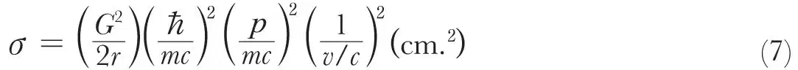
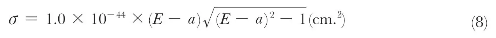
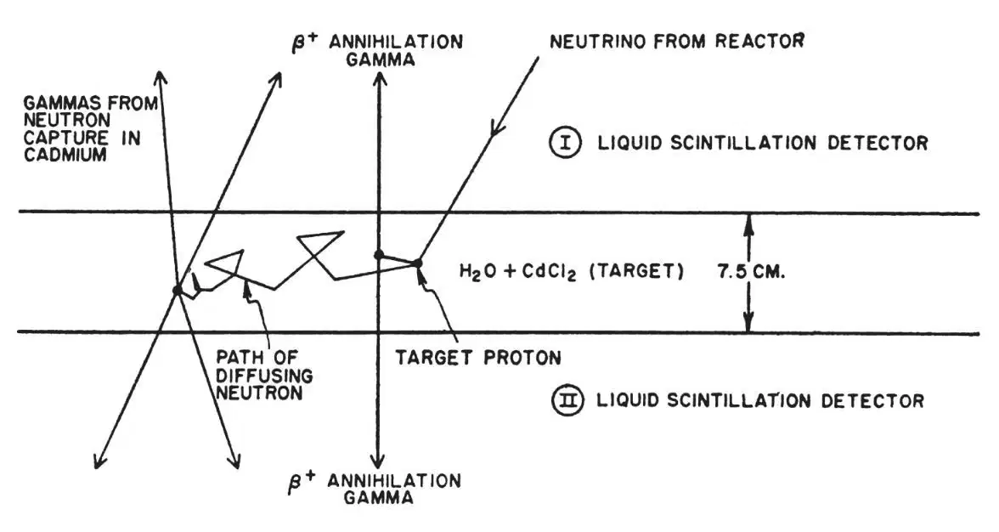
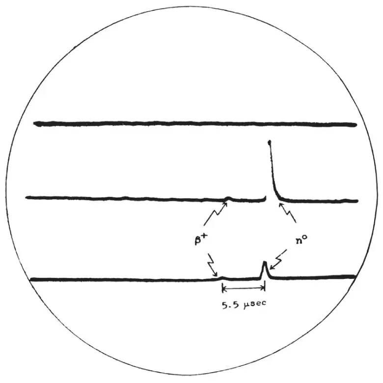
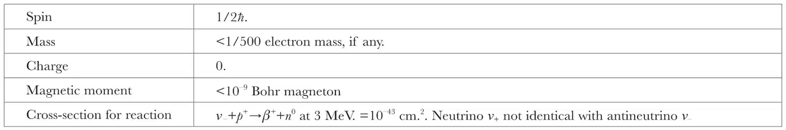

中文
中文F. Reines and C. L. Cowan
Editor’s Note
The existence of the subatomic particle called the neutrino had been inferred in the early 1930s chiefly as a result of work by Enrico Fermi in Rome and Wolfgang Pauli in Zurich from the phenomenon of radioactive beta-decay: it was supposed to be a particle with insignificant mass and no electric charge. Frederick Reines and Clyde L. Cowan at the Los Alamos Scientific Laboratory, acknowledging that nuclear reactors should be powerful sources of neutrinos, here described an experiment to demonstrate the existence of neutrinos by their interaction with protons (provided by a large tank of water) and their individual conversion into photons which were to be measured by an array of photoscintillators. The use of photoscintillators for detecting neutrinos produced in analogous nuclear reactions has become standard practice. In the 1980s, however, it became clear that there are three different kinds of neutrinos and that even those studied by Reines and Cowan may have a small mass. 中文
EACH new discovery of natural science broadens our knowledge and deepens our understanding of the physical universe; but at times these advances raise new and even more fundamental questions than those which they answer. Such was the case with the discovery and investigation of the radioactive process termed “beta decay”. In this process an atomic nucleus spontaneously emits either a negative or positive electron, and in so doing it becomes a different element with the same mass number but with a nuclear charge different from that of the parent element by one electronic charge. As might be expected, intensive investigation of this interesting alchemy of Nature has shed much light on problems concerning the atomic nucleus. A new question arose at the beginning, however, when it was found that accompanying beta decay there was an unaccountable loss of energy from the decaying nucleus1, and that one could do nothing to the apparatus in which the decay occurred to trap this lost energy2. One possible explanation was that the conservation laws (upon which the entire structure of modern science is built) were not valid when applied to regions of subatomic dimensions. Another novel explanation, but one which would maintain the integrity of the conservation laws, was a proposal by Wolfgang Pauli in 1933 which hypothesized a new and fundamental particle3 to account for the loss of energy from the nucleus. This particle would be emitted by the nucleus simultaneously with the electron, would carry with it no electric charge, but would carry the missing energy and momentum—escaping from the laboratory equipment without detection. 中文
The concept of this ghostly particle was used by Enrico Fermi (who named it the “neutrino”) to build his quantitative theory of nuclear beta decay4. As is well known, the theory, with but little modification, has enjoyed increasing success in application to nuclear problems and has itself constituted one of the most convincing arguments in favour of the acceptance of Pauli’s proposal. Many additional experimental tests have been devised, however, which have served to strengthen the neutrino hypothesis; and also to provide information as to its properties. The very characteristic of the particle which makes the proposal plausible—its ability to carry off energy and momentum without detection—has limited these tests to the measurement of the observable details of the decay process itself: the energy spectra, momentum vectors and energy states associated with the emitted electron and with the recoiling daughter nucleus5. So, for example, an upper limit has been set on the rest mass of the neutrino equal to 1/500 of the rest mass of the electron by careful measurement of the beta-energy spectrum from tritium decay near its end point6, and it is commonly assumed that the neutrino rest mass is identically zero. 中文
While there is no theoretical reason for the expectation of a finite neutrino rest mass, there is some expectation for a small but finite neutrino magnetic moment of perhaps as much as 10–10 Bohr magneton based on a consideration of possible virtual states in which the neutrino may exist effectively dissociated into other particles7. An upper limit of 2×10–9 electron Bohr magneton has been set on the magnetic moment by calculations concerning the maximum assignable heat transfer to the Earth by neutrinos from the Sun8. We have recently obtained an improved upper limit of 10–9 electron Bohr magneton using a large scintillation detector near a fission reactor at the Savannah River Plant of the United States Atomic Energy Commission. The counting rate of single pulses in an energy range of 0.1–0.3 MeV. in 370 gallons of liquid scintillator was observed, and all changes due to reactor power changes were assigned to possible electron recoils in the liquid through magnetic moment interaction with neutrinos. It is hoped that this limit may be further improved by lowering the gamma-ray and neutron background at the detector. 中文
The Pauli-Fermi theory not only requires the neutrino to carry energy and linear momentum from beta-decaying nuclei but also angular momentum, or “spin”. The simplest of beta-decay processes, the decay of the free neutron9, illustrates this:
n0→p++ β– + v_
(1)
As the neutron, proton and beta particle all carry half-integral spin, it is necessary to assign a spin quantum number of 1/2 to the neutrino to balance the angular momenta of equation (1), where any two of the three product particles must be oriented with spin vectors antiparallel. As all four of the particles in equation (1) are, therefore, fermions and should obey the Dirac relativistic Wave equations for spin 1/2 particles, there are presumably antiparticles corresponding to each, of which as yet only the anti-electron (or positron) and the antiproton have been identified. The antiparticle corresponding to the neutrino in equation (1) may be obtained by rearrangement of the terms in the following manner:
p+→n0 + β+ + v+
(2)
This process is observed in positron decay of proton-rich radioactive nuclides where the proton and daughter neutron are both constituent nucleons. Further rearrangement results in the reaction:
β– + p+→n0 + v+
(3)
This is descriptive of the capture of an electron from one of the inner atomic shells by a nuclear proton and is equivalent to equation (2). The question of the identity of the neutrino, v+, appearing in equations (2) and (3) with the neutrino, v–, appearing in equation (1) thus arises. With no finite mass or magnetic moment yet measured for either of the neutrinos, one is under no compulsion to assume that they are not in fact identical. The rule of algebraic conservation of fermions, which states that fermions are produced or disappear in particle-antiparticle pairs, requires the v–, of equation (1) to be named “antineutrino”, since it is emitted with a negative electron. The identity or non-identity of the neutrino, v+, and the antineutrino, v–, although of no observable significance in single beta decay, should be amenable to test by measurement of the decay constant for double beta decay of certain shielded isotopes. This process was studied theoretically by M. Goeppert-Mayer10 for the case in which neutrinos are not identical with antineutrinos and by Furry11 for the case in which the two neutrinos are identical, as proposed by Majorana12. Double beta decay is typified by the possible decay of neodymium-150:
150Nd→150Sm + 2β– + 2v– (Dirac-Mayer)
(4a)
150Nd→150Sm + 2β– (Majorana-Furry)
(4b)
If the neutrino and antineutrino are identical, then the virtual emission of one neutrino and its immediate re-absorption by the nucleus are equivalent to the real emission of two neutrinos, and equation (4b) is applicable. This cancellation is not possible if the neutrino and antineutrino differ. The half-lives for processes such as equation (4) have been shown by Primakoff13 and by Konopinski14 to be quite different in the two cases, of the order 1019 years for equation (4a) and 1015years for equation (4b), where 5.4 MeV. is available for the decay. Furthermore, a line spectrum for the total energy of the two beta particles is to be expected for the Majorana-Furry case (equation 4b). 中文
That a decay period consistent with equation (4b) does not exist has been shown for a number of shielded isotopes15, first by Kalkstein and Libby, then by Fireman and Schwartzer for tin-124; by Awschalom for calcium-48; and our associates and us for neodymium-150. In the neodymium-150 experiment, a lower limit of 4×1018 years (corresponding to one standard deviation in the background) was set on the mean life against Majorana-Furry decay. This limit is to be compared with a reasonable value on this hypothesis of 1.3 × 1015 years and one calculated for identical neutrinos (using most severe assumptions) to be 6×1017 years. The conclusion remains that the neutrino and antineutrino are distinct particles with an as yet undetected “difference”. This conclusion is further supported by the negative results of an experiment recently reported by R. Davis16 employing the reaction:
37Cl + v+→37A +β–
(5)
The chlorine target was supplied by 1,000 gallons of carbon tetrachloride placed near a large reactor, and the liquid was tested for the presence of argon-37. Fission fragments, being rich in neutrons, should emit only the antineutrino, v–. 中文
While careful reasoning from experimental evidence gathered about all terms in the beta-decay process—except the neutrino—may support the inference that a neutrino exists, its reality can only be demonstrated conclusively by a direct observation of the neutrino itself. If the neutrino is a real particle carrying the missing energy and momentum from the site of a beta decay, then the discovery of these missing items at some other place would demonstrate its reality. Thus, if negative beta decays as in equation (1) could be associated at another location with the inverse reaction:
v– + p+→β++ n0
(6)
which is observed to occur at the predicted rate, the case would be closed. An expression for this reaction cross-section has been obtained by application of the principle of detailed balancing to equation (1), knowing the decay constant and electron energy spectrum for the beta decay of free neutrons:

where σ is the cross-section in cm.2; G2 (=44×10–24) is the dimensionless lumped beta-coupling constant based on neutron decay9; and p, m and v are the momentum, mass and speed of the emitted positron, respectively, c is the speed of light, and 2πћ is Planck’s constant, all in c.g.s. units. For neutrinos of 3-MeV. energy incident on free protons, this cross-section is 10–43 cm.2. Explicit solution of equation (6) for the cross-section as a function of the neutrino energy yields:

where a+1 (=3.53) is the threshold for the reaction and E is the neutrino energy, both in units of mec2. The threshold for a proton bound in a nucleus is higher by an amount equal to the energy difference between the target and daughter nuclei. It is interesting to note that the penetrability of matter is given by equation (8) to be infinite for neutrinos with low energies (E<a+1) and is very large for neutrinos of only a few MeV., the mean free path for absorption being measured in the latter case in terms comparable to the radius of the universe. 中文
Equation (6) may be employed in an experiment in which a large number of hydrogen atoms are provided as targets for an intense neutrino flux and are watched by a detector capable of recording the simultaneous production of a positron and a neutron. Such a direct experiment is made possible by the availability of high beta-decay rates of fission fragments in multi-megawatt reactors and advances in detection techniques through the use of liquid scintillators. An estimate of the neutrino flux available from large reactors shows that a few protons should undergo reaction (6) per hour in 50 litres of water placed near the reactor. The problem, then, is to observe these events with reasonable efficiency against the background of reactor neutrons and gamma-rays, natural radioactivity and cosmic rays. In an experiment conducted at the Hanford Plant of the Atomic Energy Commission by us17 in 1953, an attempt was made in this direction. The target protons were supplied by 300 litres of liquid scintillator (toluene plus trace amounts of terphenyl, and alpha-naphtha-phenyloxayole in which cadmium propionate was dissolved). A delayed coincidence-rate of pairs of pulses, the first of each pair being assignable to the positron and the second to a neutron capture in cadmium, of 0.4 ± 0.2 counts per minute was observed, in agreement with the predicted rate, and with a large reduction in the backgrounds mentioned above. The signal-to-total-background ratio, however, was still very low (1/20), rendering further testing of the signal impractical and leaving the results tentative. On the basis of the Hanford experience it was felt that the detection problem was soluble in a definitive manner, and a second experiment was designed18 with the view of further reduction of backgrounds and providing means for checking each term of equation (6) independently. 中文
Fig. 1 is a schematic diagram of the detection scheme employed in this experiment. The sequence of events pictured is as follows: a neutrino from the decay of a fission fragment in a reactor causes a target proton to be changed into a neutron with the simultaneous emission of a positron. The positron is captured by an electron in the target water, emitting two 0.51-MeV. annihilation gamma-rays, which are detected simultaneously by counters I and II. The neutron moderates and diffuses for several microseconds and is finally captured by the cadmium giving a few gamma rays (totalling 9 MeV.), which are again detected by I and II. Thus we have a prompt coincidence followed in several microseconds by a second prompt coincidence, providing a very distinctive sequence of events. 中文

Fig. 1. Schematic diagram of neutrino detector 中文
The over-all size of the equipment was set by the number of events expected per hour per litre of water, and the detection efficiency one could hope to achieve. A primary factor in the design geometry and detection efficiency was the absorption of the positron annihilation radiation by the target water itself. Experimentation and calculations showed that an optimum water thickness was 7.5 cm. Since the over-all efficiency dictated a target volume of about 200 litres to yield several counts per hour, two target tanks were used, each measuring 1.9 m. ×1.3 m. × 0.07 m. The depth of the liquid scintillation detector (61 cm.) was such as to absorb the cadmium-capture gamma-rays with good efficiency and transmit the resultant light to the ends of the detector with minimal loss. The scintillating liquid (triethylbenzene, terphenyl and POPOP wave-length shifter) were viewed from the ends of each detector tank by 110 5-in. Dumont photomultiplier tubes, a number determined primarily by the amount of light emitted in a scintillation. The complete detector consisted of a “club sandwich” arrangement employing two target tanks between three detector tanks, comprising two essentially independent triads which used the centre detector tank in common. The entire detector was encased in a lead-paraffin shield and located deep underground near one of the Savannah River Plant production reactors of the United States Atomic Energy Commission. Signals from the detectors were transmitted via coaxial cables to an electronics trailer located outside the reactor building. The pulses were analysed by pulse-height and time-coincidence circuits and, when acceptable, were recorded photographically as traces on triple-beam oscilloscopes. Fig. 2 is a record of an event in the bottom triad. The entire system was calibrated using a plutonium-beryllium neutron source and a dissolved copper-64 positron source in the target tanks; and standardized pulsers were used to check for stability of the electronics external to the detector itself. The response of the detector to cosmic ray μ-mesons was also employed as a check on its performance. After running for 1,371 hr., including both reactor-up and reactor-down time, it was observed19 that:

Fig. 2. A characteristic record. Each of the three oscilloscope traces shown corresponds to a detector tank. The event recorded occurred in the bottom triad. First seen in coincidence are the “positron” annihilation gamma-ray pulses in each tank followed in 5.5 μsec. by the larger “neutron” pulses. The amplification was chosen in this case to enable measurement of the neutron pulses. A second oscilloscope with higher amplification was operated in parallel to enable measurement of the positron pulses 中文
(1) A signal dependent upon reactor-power, 2.88±0.22 counts/hr. in agreement with the predicted20 cross-section (6×10–44 cm.2), was measured with a signal-to-reactor associated accidental background in excess of 20/1. The signal-to-reactor independent background ratio was 3/1. 中文
(2) Dilution of the light water solution in the target tank with heavy water to yield a proton density of one-half normal caused the reactor signal to drop to one-half its former rate. The efficiency of neutron detection measured with the plutonium-beryllium source was unchanged. 中文
(3) The first pulse of the pair was shown to be positron annihilation radiation by subjecting it to a number of tests: its spectrum agreed with the spectrum of positron annihilation radiation from copper-64 dissolved in the water, and it was absorbed in the expected manner by thin lead sheets inserted between the target tank and one detector. 中文
(4) The second pulse of the pair was identified as due to the capture in cadmium of a neutron born simultaneously with the positron by virtue of its capture-time distribution as compared both with calculations and observations with a neutron source. The second pulse spectrum was consistent with that of cadmium-capture gamma-rays, and removal of the cadmium resulted in disappearance of the reactor signal. 中文
(5) Reactor-associated radiations such as neutrons and gamma-rays were ruled out as the source of the signal by two kinds of experiment. In the first, a strong americium-beryllium neutron source was placed outside the detector shield and was not only found very inefficient in producing acceptable delayed coincidences but was also found to produce a first-pulse spectrum which was unlike the required signal in that it was monotonically decreasing with increasing energy. In the second experiment an additional shield, which provided an attenuation factor of at least 10 for reactor neutrons and gamma-rays, was observed to cause no change in the reactor signal outside the statistical fluctuations quoted in (1). 中文
Completion of the term-by-term checks of equation (6) thus demonstrated that the free neutrino is observable in the near vicinity of a high-power fission reactor. 中文
The availability of neutrinos from reactors in sufficiently intense fluxes has opened a number of interesting possibilities. One arises from the use of heavy water to dilute the proton target as described above. This test was valid because the threshold for the neutrino interaction with the deuteron is higher by 2.2 MeV., the binding energy of the deuteron, than the threshold energy for equation (6), and the cross-section is for this reason an order of magnitude smaller; other considerations reduce it still further. The neutrino-deuteron interaction is itself, however, of interest, as two alternatives arise:
v– + D→β++ n + n
(8a)
v– + D→β++ n2
(8b)
where n2 is the bound state of the bineutron21, as yet unobserved. If reaction (8a) were observed to occur, then a careful measurement of its rate relative to the rate of reaction (6) and a knowledge of the fission neutrino spectrum should enable a direct determination of the ratio of the Fermi and Gamow-Teller coupling constants in beta decay. This follows from the fact that the coupling constant in equation (6) includes a mixture of both types, whereas in (8a) it is composed of the Gamow-Teller constant alone. If, on the other hand, equation (8b) were observed, not only would these considerations hold, but also the existence of a bound state of the bineutron, which would necessarily be a singlet state (antiparallel spins) because of the Pauli exclusion principle, would bear directly on the question of the dependence of nuclear forces on charge. This follows because the singlet state of the (n, p) system is known to be unbound. As the two neutrons in equation (8a) can possess only a few kilovolts of energy when produced by fission-fragment neutrinos, and as they leave the event in antiparallel spin states, the conditions seem favourable for the formation of bineutrons, even if the binding energy were only tens of kilovolts. 中文
Since the proposal of the neutrino hypothesis by Pauli and its success in Fermi’s theory of nuclear beta decay, the particle has been called upon to play similar parts in the observed decay of a number of different mesons22. The question arises as to the identity of these neutrino-like particles with the neutrino of nucleon decay. It is to be noted that in nuclear beta decay the initial and final nuclei both quite obviously interact strongly with nuclei. This is not the case in (π, μ) decay, where the emission of a “neutrino” converts the interaction of the heavy particles with nuclei from strong to weak. Furthermore, despite the apparent equality of the nuclear beta-decay matrix elements with those associated with (μ, β) decay, both the initial and final products of the latter interact weakly with nuclei. 中文
The neutrino is the smallest bit of material reality ever conceived of by man; the largest is the universe. To attempt to understand something of one in terms of the other is to attempt to span the dimension in which lie all manifestations of natural law. Yet even now, despite our shadowy knowledge of these limits, problems arise to try the imagination in such an attempt. If nuclear reactions played a part in a cataclysmic birth of the universe as we assume, what fraction of the primordial energy was quickly drained into the irreversible neutrino field? Are these neutrinos—untouched by anything from almost the beginning of time—trapped by the common gravitational field of the universe, and if so, what is their present density, their energy spectrum and angular distribution? Do neutrinos and antineutrinos exist in equal numbers? If the neutrino has zero rest mass, is it to be considered with “matter” particles in discussing its gravitational potential, or with electromagnetic radiation? The problem of detecting these cosmic end-products of all nuclear energy generation processes and the measurement of their characteristics presents a great challenge to the physics of today. 中文
The known properties of the neutrino are summarized below.
Properties of the Neutrino

Our work and that of our associates reported in this paper were supported by the United States Atomic Energy Commission. 中文
(178, 446-449; 1956)
Frederick Reines and Clyde L. Cowan, jun.: University of California, Los Alamos Scientific Laboratory, Los Alamos, New Mexico.
References:
1. Chadwick discovered that the beta spectrum was continuous. L. Meitner suggested in 1922 that a quantized nucleus should not be expected to emit a continuous spectrum, and Ellis found non-conservation of energy from experiments on the emitted electron. Chadwick, J., Verh. Deutsch. Phys. Ges., 16, 383 (1914). Ellis, C. D., Internat. Conf. on Phys., 16, 209 (1934).
2. Ellis and Wooster, Proc. Roy. Soc., A, 117, 109 (1927). Chadwick, J., and Lea, D. E., Proc. Camb. Phil. Soc., 30, 59 (1934); Nahmias, M. E., Proc. Camb. Phil. Soc., 31, 99 (1935). Wu, C. S., Phys. Rev., 59, 481 (1941).
3. Pauli, W., in “Rapports du Septième Conseil de Physique Solvay”, Brussels, 1933 (Gauthier-Villars, Paris, 1934).
4. Fermi, E., Z. Phys., 88, 161 (1934).
5. We do not attempt here to describe the many beautiful and difficult, recoil experiments in which recoils of neutrino-emitting nuclei (~8-200 eV.) have been measured. A summary can be found in an article by O. Kofoed-Hansen in Siegbahn’s “Beta and Gamma-Ray Spectroscopy” (Interscience Publishers, Inc., New York, 1955).
6. Langer, L. M., and Moffat, R. J. D., Phys. Rev., 88, 689 (1952). Hamilton, Alford and Gross, Phys. Rev., 92, 1521 (1953). This question is treated in detail in an article by C. S. Wu in Siegbahn (op. cit.). We quote Dr. Wu’s most conservatively estimated limit.
7. Houtermans, F. G., and Thirring, W., Helv. Phys. Acta, 27, 81 (1954). H. A. Bethe has given the relationship between the recoil electron spectrum and the energy and magnetic moment of a neutrino in Proc. Camb. Phil. Soc., 31, 108 (1935).
8. Crane, H. R., Revs. Mod. Phys., 20, 278 (1948). This article also summarizes neutrino detection attempts to 1948. The status of the neutrino in 1936 is given by H. A. Bethe and R. F. Bacher. Revs. Mod. Phys., 8, 82 (1936).
9. Snell, A. H., and Miller, L. C., Phys. Rev., 74, 1714 A (1948). Snell, A. H., Pleasanton, F., and McCord, R. V., Phys. Rev., 78, 310 (1950). Robson, J. M., Phys. Rev., 78, 311 (1950); 83, 349 (1951).
10. Goeppert-Mayer, M., Phys. Rev., 48, 512 (1935).
11. Furry, W. H., Phys. Rev., 56, 1184 (1939).
12. Majorana, E., Nuovo Cimento, 14, 171 (1937).
13. Primakoff, H., Phys. Rev., 85, 888 (1952).
14. Konopinski, E. J., Los Alamos Report LAMS 1949 (1955).
15. Kalkstein, M. I., and Libby, W. F., Phys. Rev., 85, 368 (1952). Fireman, E. L., and Schwartzer, D., Phys. Rev., 86, 451 (1952). Awschalom, M., Phys. Rev., 101, 1041 (1956). Cowan, jun., C. L., Harrison, F. B., Langer, L. M., and Reines, F., Nuovo Cimento, 3, 649 (1956).
16. Davis, jun., R., Contributed Paper, American Physical Society, Washington, D. C., Meeting, 1956. This experiment was originally suggested by Pontecorvo and considered by Alvarez in a report UCRL-328 (1949).
17. Reines, F., and Cowan, jun., C. L., Phys. Rev., 90, 492 (1953); 92, 830 (1953).
18. Cowan, jun., C. L., and Reines, F., Invited Paper, American Physical Society, New York Meeting, January 1954.
19. Cowan, jun., C. L., and Reines, F., Postdeadline Paper, American Physical Society, New Haven Meeting, June 1956. Cowan, Reines, Harrison, Kruse and McGuire, Science, 124, 103 (1956).
20. The neutrino spectrum was deduced from the spectrum of beta-radiation from fission fragments as measured by C. O. Muehlhause at the Brookhaven National Laboratory. Dr. Muehlhause kindly communicated his results to us in advance of publication.
21. The evidence for and against the existence of a “bineutron”, also called “dineutron”, is discussed by B. T. Feld in his article on the neutron in the volume edited by E. Segrè entitled “Experimental Nuclear Physics”, 2 (John Wiley and Sons, Inc., New York, 1953).
22. Oneda, S., and Wakasa, A., discuss the question of classes of interactions between the elementary particles in Nuclear Phys., 1, 445 (1956).